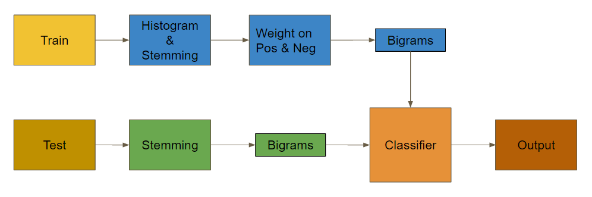

Movie Review Sentiment Prediction
CS5450 Project Final Report
Authors:
Nick Conlon (UMS# 01210222) - nickconlon1@gmail.comPrasant Ghantasala (UMS# 01570317) - prasant.ghantasala@gmail.com
Jesse Lucas (UMS# 00708063) - jtlucas@gmail.com
Goal
The goal of this project is to classify the sentiment expressed in movie reviews from IMDb as either positive or negative. In addition, the classifier was used to take part in a competition ranking different classifiers in their ability to predict sentiment. The training data provided is a portion of the data tabulated by Maas et al. for their paper “Learning Word Vectors for Sentiment Analysis” (2011) where ratings less than or equal to 4 are considered negative, and ratings greater than or equal to 7 are considered positive.
Introduction
Nowadays, automated rating and recommendation systems are ubiquitous. Whether you’re looking for a movie to watch on Netflix, shopping online through Amazon, or finding a good place to eat with Yelp, a learning algorithm is helping you make the best decision. In order to do that, they need to (among other things) predict the overall sentiment of different reviews and combine it with your preferences to determine how to present the best options. Now consider a company about to launch a new product. Before a general release, they want to survey potential users to understand expectations. In order to process large quantities of survey responses, sentiment analysis can be used to gauge response to their new product.
Being able to quickly and efficiently parse through and predict user sentiment on such a wide range of topics is a problem that both industry and academia have been attempting to solve for some time. Methods used have ranged from Bayes models, to support vector machines, to neural networks with varying kinds and numbers of feature extractions.
With the many different attempts at sentiment classification, there is always the tradeoff between a fast prediction and an accurate prediction. Simple models that train quickly often do not predict as well as more complex models that take longer to train. In this paper we will present an efficient and relatively accurate classification method specifically trained for movie review sentiment prediction which leverages a Naive Bayes classifier. We show, that by utilizing a simple Bayes model along with multiple feature extraction techniques, we were able to attain classification accuracy comparable to much more complicated models.
Background
There have been many studies in the past few years with different proposed models for predicting sentiment in reviews. Pang et al. (2002) describes three different approaches for sentiment classification. Their goal was to determine if topic-based categorization methods could also be used for sentiment classification. After testing a Naive Bayes (NB) model, maximum entropy classification, and support vector machines (SVM), they determined that these methods could be used for sentiment classification and proved better than using classifiers picked out by humans. However, there were still improvements that could be made to create a better classifier more tailored to sentiment classification.
Maas et. al. (2011) used a combination of unsupervised and supervised methods to learn vectors of words that can capture both sentiment and non-sentiment information about a review. Their model used a weighted logistic regression to predict sentiment from the vector word representations.
Wu and Pao (2012) compared Deep Learning, Multinomial Naive Bayes (MNB), and Support Vector Machine (SVM) in addressing the problem of sentiment prediction, in particular, predicting over a dataset of Rotten Tomatoes movie reviews. Their simple three layer neural network utilized a variable length window, and had a logistic regression classifier as output layer. With this they were able to achieve on average 60% sentiment prediction accuracy. The MNB and SVM led to more promising results, achieving 78% and 76% sentiment prediction accuracy respectively. Although there is much potential for neural networks, the simple word-vector representation used here (treating each n-gram independently) proved insufficient in comparison to the more robust MNB and SVM, which treat sets of n-grams as related.
Signh, Murthy, and Gonsavles compared different feature selection methods (Within-Class-Popularity, CHI-square, Information Gain, and Mutual Information) across multiple machine learning text classifiers (Seed-based, kNN, Naive Bayes, and SVM). They were able to improve performance across all classifiers and find that WCP outperforms the other feature selections across all classifiers.
Approach
Naive Bayes
We chose to use a Naive Bayes model in order to predict sentiment in movie reviews. Bayes Theorem states that for independent features B the following is true:

For our problem, A would be the sentiment of the review, and B would be the features of the review. A Naive Bayes model implements just this simple equation to determine the probability of a label given a vector of features based on the probabilities of that feature given the label in a collection of training data. It is termed as “naive” because of the assumption that every feature is independent. While this is not the case in practice, it has been shown that even with this assumption accurate predictions can be made using this model.
Training and Classifying
In order to create the classifier, first we process the labeled training reviews and extract feature sets out of them. These features include words and bigrams (2 words that appear consecutively in a string) that have been preprocessed to determine the best to use. Every feature is boolean in nature, and the feature set of the review determines which features exist for that review. The classifier is trained by collecting every feature that is seen in every review and creating a frequency distribution conditional on the sentiment label. This accounts for
in Bayes Rule which is calculated by dividing the frequency of the feature occurring with the total count of the label. In addition, a frequency distribution of the label itself is also created accounting for
. As  is constant with respect to different labels, we can discount it for the model. A portion of the final feature collection of the model could be
is constant with respect to different labels, we can discount it for the model. A portion of the final feature collection of the model could be
For every feature in the feature collection, the associated conditional probability distribution of that feature occurring given a label is stored.
Once the model is trained, it can be used to classify new reviews. The classifier uses the same feature extraction process on a new review that it used for training, yielding a collection of words and bigrams. The classifier then uses Bayes rule to calculate the probability of every sentiment label given the feature set of the new review i.e.
where is the conditional distribution for each feature and is the prior distribution stored in the training phase. The maximum for all possible sentiment classifications is then chosen as the predicted sentiment. However, due to the very small conditional probabilities, taking the product is computationally expensive and risks floating point errors. Thus, we actually maximize the log probability rather than the probability directly. This results in an equation as follows
As the logarithm is a monotonically increasing function, maximizing the log probability will yield the same result as maximizing the probability itself, and our classifier will be faster and more accurate at computing a sum instead of a product.
Resources
In order to carry out the feature extraction process and create the classifier, we leverage the Python Natural Language Toolkit (NLTK). The NLTK is a free and open source Python library of functions for parsing text and creating statistical analyses. Using NLTK, we created custom text parsers for feature extraction including stemming, finding bigrams, and finding the best words to use as features. Our classifier is also based on the Naive Bayes classifier in NLTK with significant performance improvements accomplished by limiting it to boolean feature distributions and stripping out unnecessary abstractions.
Dataset
The dataset used for training and testing the model is a subset of the data tabulated by Maas et al. (2011). It consists of 36,000 reviews from IMDb of which 25,000 are labeled and 11,000 are unlabeled. The labeled set were split evenly between positive and negative reviews. Examples of positive and negative reviews are as follows:
Positive:
“Bromwell High is nothing short of brilliant. Expertly scripted and perfectly delivered, this searing parody of a students and teachers at a South London Public School leaves you literally rolling with laughter. It's vulgar, provocative, witty and sharp. The characters are a superbly caricatured cross section of British society (or to be more accurate, of any society). Following the escapades of Keisha, Latrina and Natella, our three "protagonists" for want of a better term, the show doesn't shy away from parodying every imaginable subject. Political correctness flies out the window in every episode. If you enjoy shows that aren't afraid to poke fun of every taboo subject imaginable, then Bromwell High will not disappoint!”
Negative:
“Story of a man who has unnatural feelings for a pig. Starts out with a opening scene that is a terrific example of absurd comedy. A formal orchestra audience is turned into an insane, violent mob by the crazy chantings of its singers. Unfortunately it stays absurd the WHOLE time with no general narrative eventually making it just too off putting. Even those from the era should be turned off. The cryptic dialogue would make Shakespeare seem easy to a third grader. On a technical level it's better than you might think with some good cinematography by future great Vilmos Zsigmond. Future stars Sally Kirkland and Frederic Forrest can be seen briefly.”
Evaluation
Feature Extraction
We implemented and tested many approaches to try and increase our classifier’s accuracy. These methods included removing punctuation, removing numbers, best words, weighted best words, bigrams, best word bigrams, trigrams, and stemming. We tried removing punctuation and digits from the dataset theorizing it would help remove any false positives as they are not tied directly to sentiment in writing. However, this did not increase our accuracy as we found that our data had people rating the movie in the review (for example the string “I give this movie 4/10 stars”). So instead of removing digits and punctuation, we used it to help gauge the sentiment of the review. As stated above bigrams are extremely helpful as the more words you add to search the more sentiment you can extract. Based on this logic we tried implementing trigrams, 3 word chains. This however, did not improve our accuracy as it picked up random words in addition to our bigrams that were not popular parts of speech causing no gain on our prediction.
We also implemented a best words algorithm. We took our training data set and made a frequency distribution of all words in both positive and negative reviews. We then used weighting algorithms to weight them and only take the top 5,000 words. We also used a tagging feature from NLTK that allowed us to only select nouns, verbs, adverbs, and adjectives. We found that using pronouns or other parts of speech weren’t helpful. This would allow us to use only words that we found to be prevalent in both reviews. This helped both speed up our algorithm as it did not need to classify every word, and also increased our accuracy by looking at only the most popular words. With this improvement we tried to separately weight the words coming out of the bestwords frequency distribution and use more positive than negative words or more negative words over positive, but this did not increase our accuracy. We also tried to apply these words to our bigrams and only accept bigrams that contained these bestwords. This also didn’t impact our accuracy as we were already selecting bigrams with rich features.
Finally we implemented stemming to our feature extraction which helped push our cross validation accuracy over the .89 mark. Stemming is the removal of the derivation of a word into its root form. This was helpful as we could train on the root word and then parse the same root word from the data without needing to match a particular tense or inflection of the word.
Experiment and Results
We tested each feature extraction by varying multiple parameters including size of training set, number of bigrams, number of best words, and types of words to use. Our baseline accuracy on our cross validation set was 0.87. After adding the bigram feature extraction we were able to get a cross validation accuracy of low 0.88 and after adding best words high 0.88. And finally after adding best words, bigrams and stemming we were able to achieve 0.89.
 Figure 1. Implementation block diagram
{kind=link}
Our final implementation block diagram is detailed in Figure 1. Initially, we used 80% of the train data for training and the other 20% for cross validation. For a given review, we used stemming, best words, and bigram determination to train our classifier. Next, we applied the same stemming and bigram algorithms to parse the test data before running it through the classifier to predict its sentiment.
| Train Accuracy | Cross Validation | Positive Precision | Positive Recall | Negative Precision | Negative Recall | |
|---|---|---|---|---|---|---|
| Baseline | 0.9484 | 0.8756 | 0.8906 | 0.8565 | 0.8617 | 0.8948 |
| Bigrams | 0.9984 | 0.8856 | 0.9170 | 0.8439 | 0.8596 | 0.9260 |
| Bigrams and Best words | 0.9982 | 0.8898 | 0.9140 | 0.8582 | 0.8688 | 0.9208 |
| Bigrams, best words, stemming | 0.997 | 0.8966 | 0.9204 | 0.8667 | 0.8757 | 0.9261 |
Our results shown in Table 1, are our positive feature improvements as we would move on after a failed feature extraction attempt. Based on our results it can be seen that the training accuracy did increase with the addition of more feature extraction techniques, although, there needs to be more work done to correctly handle the trade off of precision and recall for each of the positive and negative reviews.
Conclusion
We have presented the theory and implementation behind a lightweight Naive Bayes classifier and custom text parsers based on the NLTK package. Significant performance increases (runtime and accuracy) were gained over the ‘out of the box’ NLTK Naive Bayes classifier by using multiple feature extraction techniques including bigrams and best words. With a baseline training accuracy of 0.848, we were able to improve to an accuracy of 0.898 by using a combination of bigrams, best words. Additionally, we found that including stemming with bigrams and best words had little effect on training accuracy, reducing it slightly to 0.897.
This classifier was entered in a Kaggle IMDb movie review sentiment prediction competition for which we were able to attain a test set accuracy of 0.875 and placed us squarely in the middle of the rankings. Though Naive Bayes classifiers are quick to implement and comparable to other more complex methods, due to their simplicity there is a limit in the accuracy they are capable of. To increase accuracy in such a simple model, further work can focus on (1) more efficient test pre-processing techniques, and (2) different combinations of feature extraction techniques. With this direction, we believe we can attain a significant test set accuracy with our lightweight Naive Bayes classifier.
Team Roles
Every team member was involved in every step through the project from planning and deciding the approach, implementing in code, testing the model, creating the presentation, and writing this paper. No one person was responsible for any single aspect. Work was split as evenly as possible.
References
Andrew L. Maas, Raymond E. Daly, Peter T. Pham, Dan Huang, Andrew Y. Ng, and Christopher Potts. 2011. Learning word vectors for sentiment analysis. In Proceedings of the 49th Annual Meeting of the Association for Computational Linguistics: Human Language Technologies - Volume 1 (HLT '11), Vol. 1. Association for Computational Linguistics, Stroudsburg, PA, USA, 142-150.
Bo Pang, Lillian Lee, and Shivakumar Vaithyanathan. 2002. Thumbs up?: sentiment classification using machine learning techniques. In Proceedings of the ACL-02 conference on Empirical methods in natural language processing - Volume 10 (EMNLP '02), Vol. 10. Association for Computational Linguistics, Stroudsburg, PA, USA, 79-86. DOI=http://dx.doi.org/10.3115/1118693.1118704
K.-M. Schneider. 2005. Techniques for Improving the Performance of Naive Bayes for Text Classification., in Alexander F. Gelbukh, ed., 'CICLing' , Springer, pp. 682-693.
S. R. Singh, H. A. Murthy, & T. A. Gonsalves. 2010. Feature Selection for Text Classification Based on Gini Coefficient of Inequality., in Huan Liu; Hiroshi Motoda; Rudy Setiono & Zheng Zhao, ed., 'FSDM' , JMLR.org, , pp. 76-85 .
Jean Y. Wu, Yuanyuan Pao. 2012. Predicting Sentiment from Rotten Tomatoes Movie Reviews. http://nlp.stanford.edu/courses/cs224n/ 2012/reports/WuJean_PaoYuanyuan_224nReport.pdf